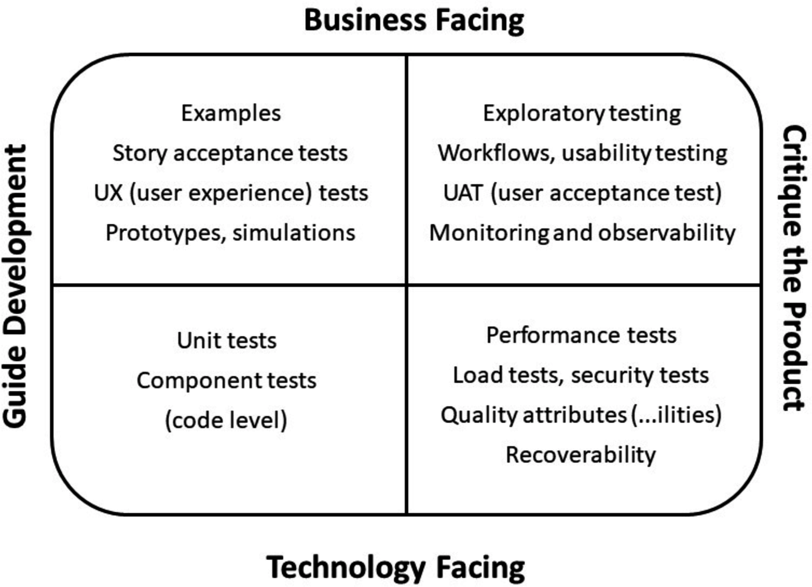
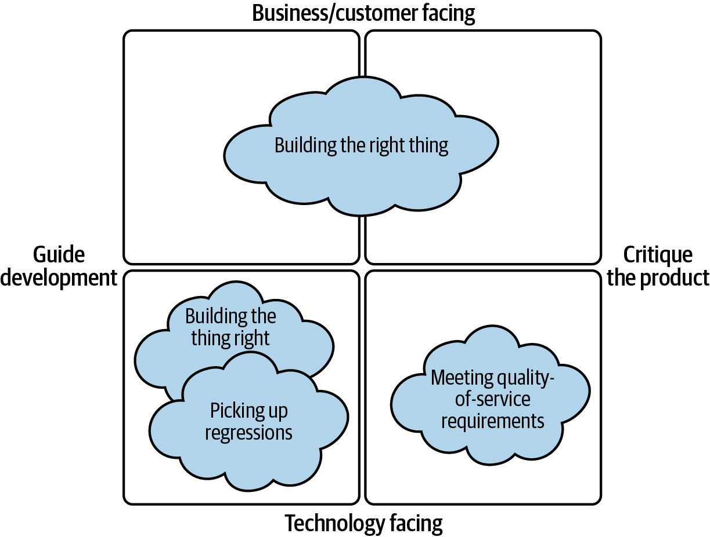
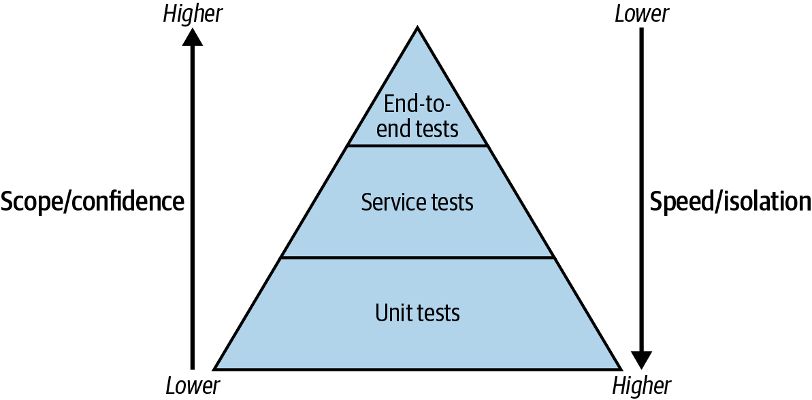
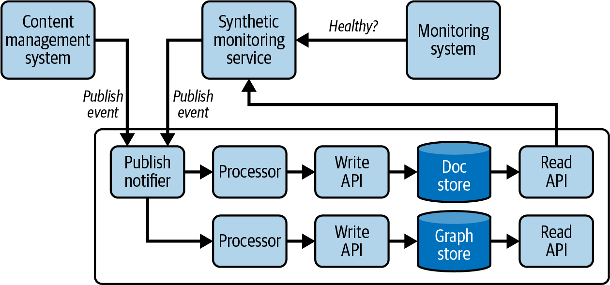

Testing helps you to build the right thing, and it tells you when something has stopped working the way it should. But if you take the wrong approach to testing, your tests can slow down every release because they take so long to run, and they still may not catch the real problems. Even worse, you can spend far more time making changes to your tests than to the code itself!
Testing is of course a huge topic. My main focus in this chapter is to talk about it in the context of moving to a microservice architecture.1 Testing microservices is not the same as testing a monolith, and I want to explain why.
The most important change is about mindset and organizational structure. Treating testing as a separate activity, done by a separate team as a prerelease activity, has long been considered a bad idea. With microservices, you simply cannot afford to do this. You need testing to be done throughout the route to production, by your engineering team, whether you have specialist QA people on that team or not.
Quick automated unit tests give a lot of value with a microservice architecture, but running end-to-end tests in production with good monitoring is often a more effective approach than trying to run similar end-to-end tests in preproduction environments, which can turn into fixture maintenance hell. Manual testing as part of each release needs to be kept to a minimum: it simply takes too long and is too error prone and inconsistent when you move from releasing once a week to multiple times a day.
I’m going to discuss what makes for a good test and cover the types of testing you may want to put in place, before moving on to talk about testing in production.
Testing in production may sound scary, but I’ll show you how to approach it to minimize the risk of everything breaking, and maximize your chance of finding and fixing bugs before they impact your customers.
I also want to discuss testing your infrastructure. With microservices, you have a lot of infrastructure and infrastructure configuration, and getting that configuration wrong can be a big cause of production incidents. You need ways to test this!
Finally, I have some recommendations on where to start if you are finding your tests are holding you back. What are the steps that will start to shift the balance so that you benefit from your tests?
But first off, let’s talk about why we test at all, and then about moving testing to happen earlier in the development lifecycle.
Testing is important, but why? In a blog series on Agile testing, Brian Marick came up with a matrix categorizing different types of tests based on why we do them. This extremely useful matrix has been popularized and iterated on by Lisa Crispin and Janet Gregory in their books on Agile testing. Figure 10-1 shows their version 3, from Agile Testing Condensed: A Brief Introduction.2
There are two dimensions to the quadrant. The first dimension is whether the tests are business facing or technology facing. The second is whether they are there to guide development, or to critique the product:
This is about the audience for the tests, and therefore the language used. For business-facing tests, for example, behavior-driven development (BDD) tests, you want to develop your tests in collaboration with business experts, using their language. Technology-facing tests, for example unit or performance tests, are not written in business language typically, and that’s fine; they aren’t something that business users will need to read.
This is about when you do the testing. There are tests that help you while you are developing, both to make sure you are building what’s been asked for and to prevent defects. There are also tests of the whole product, that look for missing features and escaped defects. On the technology-facing side of things, critiquing the product includes things like security, load, and performance testing, which are easier to do at a product level.

I like the Agile testing quadrant, and I’ve found it’s a flexible framework. As we add more types of testing—for example, the move to doing more of our testing in production (which I’ll talk about later in the chapter), or the change to include some of the “-ility” testing at earlier stages of development—the quadrants themselves are still a very useful framing.3 What I want to do next, though, is talk in detail about the four main goals I have for testing, and where I think they sit on the Agile testing quadrant:
Did we build what we intended to? These are tests that check that developers have not made any mistakes in coding the scenario, at least as they understand it. These are technology facing, and they guide development.
Does what we built actually meet the users’ needs? This is to catch places where the developer’s understanding of the scenario is faulty—or where the business stakeholder also didn’t understand the customer! It’s also where we catch instances of “That’s what I said but it’s not what I meant” (see Crispin and Gregory’s Agile Testing book). As a result, this encompasses both business-facing quadrants, since the tests can guide development and critique the product.
Have we made a change that has introduced a bug? If we are confident in our regression tests we can refactor our code frequently and with little risk. Again, these are technology facing, and they guide development.
Does our service meet requirements around things like security, accessibility, latency, load, and reliability? These are technology-facing tests that critique the product (although they can actually be used to guide development, for example, by picking up the impact of a change on performance early through automated performance testing in a build pipeline).
I’ve created my own version of the Agile testing quadrant, shown in Figure 10-2, to show these goals.

Let’s dig into these goals in more detail.
The first goal I have in mind when testing is to make sure that the code being written does what I think it should. These tests validate that I haven’t made a mistake during implementation. Brian Marick calls these “code-guiding examples.”4
The most effective way to check you haven’t made a mistake during implementation is by writing automated tests that you can run locally as you write the code. To do this, you write an example—which handily also can serve as documentation of the functionality—and that guides you in writing the code. You check your implementation by running the test.
You want the tests you write to “drive” the code you write, because that keeps you focused on what you are trying to implement, from the outside in: for example, testing that you cannot create a user if there is already a user with the same name. It also ensures that the code you write is testable, which generally means a good interface.
Test-driven development (TDD) as formally defined suggests that you start by writing a failing test, then write enough code to make it pass. I’m going to admit that often, I write a bit of code, then a test, then keep moving between the two. The value for me comes from writing the two together—I never finish the code then start writing tests, because whenever I’ve done that, I find I don’t have testable code and have to start again. I also find it is valuable to make sure your test would fail if the code did something unexpected. You would be surprised how often I have deliberately changed a “==” to a “!=” and seen the test remain green!
TDD is about design far more than it is about testing, which is something it took me a surprising amount of time to realize.
These tests written as part of TDD become regression tests: they will only fail again when you deliberately—or accidentally—change the functionality of your system.
They allow you to refactor with confidence. You should expect them to break when you make a functional change. If you make a change and no tests fail, you have missing tests!
It’s important to write tests for failure cases as well as for the “happy path.” This means you have to understand what should happen when data is missing or incorrect, which might involve talking to stakeholders to work that out.
The next goal is to check we actually built the right thing. That means making sure that we have properly understood the users’ needs and codified this understanding through a series of tests and assertions.
There are two parts to this: up front, you want to develop a shared understanding of how the application should behave. Then, once the code is complete, you want to test whether that shared understanding missed something.
To develop a shared understanding, developers and testers need to talk to customers or stakeholders, to go from a likely fairly short initial description of the feature to a rich set of examples, described in the language the business uses. These scenarios enable you to test that you built what was being asked for.
A good guideline in writing these business scenarios is to focus on who you would contact if the test failed in six months’ time. If you’d ask the product owner whether the test is still valid or the functionality required has changed, bingo! That is a business scenario.
If you’d ask a developer, what you have is not a business scenario.
You might wonder how this fits with the previous section on “Building the Thing Right.” My experience is that often, I can write tests for a service as I implement it that are based on the business-level examples, even if the tests themselves are unit tests. Sometimes though, you are writing code somewhere “within” the scenario. Hopefully, you have identified how this code fits in. If you have gotten that wrong, though—let’s say you think part of the requirements are going to be dealt with in some other code, but you are wrong—then your tests for the service will pass, because they test whether you did what you set out to do. You are building the thing right. But the tests for the scenario will fail, because it is not correctly implemented. You are not building the right thing.
The third thing you want testing to do is to pick up bugs you introduce into existing code—i.e., for a test to fail if you change the code and accidentally introduce a bug. This is called a regression test because the quality of the code has regressed.
Unit tests that you write alongside the code to check your implementation should work as regression tests, provided you did make sure your test would fail if the code stopped working; otherwise, you won’t pick up the regression.
It’s also important to write tests so that if a test fails, you understand what it was trying to do, and can grasp why it is now failing: give “future you” a helping hand! That means giving the test a name that makes it clear what is being tested; using variables that make your intentions clear; and having excellent messages in your assertions so that a failed test explains what the expectation was and what actually happened. What I’m really saying here is that test code is first-class code: write it properly, review it, and test it. Then, when a test fails, you should be able to rapidly work out why.
Quality-of-service requirements are all those expectations that the service or possibly the wider system it is part of needs to meet. People often refer to these as non-functional requirements, or the “-ilities” (from scalability, accessibility, etc.) but I think the idea that this is about quality is useful.
This is the fourth goal I have for testing: can I understand whether the code I’m writing meets accessibility standards, has acceptable latency, can handle expected load, and keeps information secure?
Some of these requirements will need to be tested end-to-end. For example, if you want to performance test your system, you need to measure the performance of that whole system under load, or the latency of a request that goes through many microservices.
You can also add testing at a lower level. For example, you can have performance tests or security scanning within a build pipeline for an individual microservice to give you a level of confidence that changes in your code aren’t going to have a big impact on performance. Doing this kind of testing earlier saves you time, because you pick up on the problem earlier, and it also helps keep the importance of these quality considerations in your mind as you write the code.
We’ve covered why we should test. The next question is when we should test.
For most of my career, testing was a separate phase from development, carried out by different people within the same team. Developers would write code and hand it over to be tested, often manually, but sometimes via automated acceptance tests. If testers found a bug, the code would go back to the developer to fix it.
In a good team, testers and developers talked all the time and worked collaboratively to identify and fix real problems. In a bad team, developers would treat testing as secondary, testers could become a bottleneck, and the two sides could end up communicating largely through bug tickets.
The move to microservices, and the adoption of DevOps, required a change to how we did testing. Releasing 10 times a day isn’t possible without a fast CI pipeline and that can’t include a manual regression testing phase, because that takes too long. As my team started to release frequently, we also reduced manual testing to a minimum and started to focus far more on our automated tests.
We began treating quality as the responsibility of the whole team, with tests being written by the same developers who were writing the code, in collaboration with our QA colleagues.
We “shifted left” in our testing, meaning that we did it earlier in the process. Our aim was to write automated tests as part of writing the code, that could be run whenever the code changed from then on. This meant that there didn’t need to be a separate manual regression testing phase before releasing to production.
When you write the tests at the same time as the code, it is much easier to change the code to make that testing easier. When our testers wrote acceptance tests as a separate task, they didn’t often go back to developers to ask them to change interfaces to make the acceptance tests easier to write. And that meant acceptance tests tended to be quite brittle, in that code changes could break them.
When QAs worked with developers to define acceptance tests at the time the code was being written, I could see the benefits—we no longer had the issue that a small bug found after the code was “completed” could take ages to fix because it was hard to write an automated test for it!
This move to write more automated tests, and to write them early, really made clear to me that testing is not just about finding bugs.
I’m going to talk about different types of testing in the next section, but before I do that, I want to talk about what makes a good test.
Different types of testing will do better for different parts of this list, but in general, you should strive to write tests that deliver these things.
Although the often cited figures about the extra cost of finding a bug late in development versus early are dubious at best, and come from a time where releasing code happened infrequently and with a higher incurred cost, it is still the case that you want to know as early as possible that you have a problem.
Ideally, you want to get feedback while you are writing the code. At the latest, you want to get feedback while you still have all the context of this work in your head. Not weeks later.
You also want to get feedback quickly. During development, you want to be able to run tests in seconds, so that you can go through a code → test → code loop repeatedly without having to wait. Any time you have to wait, you run the risk of getting distracted with whatever you were doing to fill in the time.7
Fast and early means you need automated tests. Much of the focus in this chapter will be on automated tests, for that reason.
Even for tests running later in the release process—for example, after the code commit—you want these tests to take minutes, not hours. This is because, if you want to release code regularly, you don’t want to be stuck waiting behind the tests for the previous release that are still running. Even worse, if that previous release fails, you don’t want the complexity of dealing with a rollback when there are already several other changes en route to production.
When you change the behavior of some code, it needs to be simple and quick to change related tests.
This is often where people get stuck when they move to microservices and I’ve experienced this myself. In our early days at the FT, we had a suite of acceptance tests that had to set up data for each service as a precondition for running the tests.
We had a case where a half-hour change to the code, which added a field to an interface, involved over a week of trying to get those acceptance tests fixed again. That isn’t a good ratio.
Data fixtures tend to be brittle whether you are working with a monolith or microservices, but microservices make it more challenging because you have to set up data for each microservice, in each of their (possibly different) data stores. Some of the data is duplicated, occurring in more than one store to reduce unnecessary traffic—for example, storing the name of a customer in an Order service, not just the ID, so that you don’t have to look up that name each time you want to display the order. That makes for bigger data fixtures.
I’ll talk more in “End-to-End Tests” about why acceptance tests are a particular challenge in a microservice architecture, but whatever type of testing you are doing, tests should be quick and low risk to change.
I am not a fan of test coverage targets, where you agree that tests should cover 80% of your code. Why 80% and not 85% or 75%? But really, I am not a fan because it can encourage people to write a lot of very low-value tests. These are tests that pass when they are written, and pass every time afterwards, because they are testing code that is simple. You really want to focus on tests for parts of your code that are more complicated.
Similarly, I think it is important to focus on the likelihood of a problem being surfaced. I was once on a team where very thorough testing would mean a bug being raised for a read endpoint of an HTTP API for “HTTP method PUT should not be supported, but the code doesn’t return 405 Method Not Allowed.”
While it was true that PUT shouldn’t be supported, this service was only called by other services owned by the same team. And an attempt to PUT would not write anything into the service.
So the question is, how likely is it that we’d be bitten by this bug, and if we were, how likely is it that we would have any difficulty working out what went wrong?
Now, if this was a public API endpoint, I might feel differently!
The general focus should be, could I know when something isn’t working, where it matters that it is broken? This is where business-focused scenarios help, but this should also include a focus on things like performance and security. For performance, what level of “slow” is “too slow”? For security, is there an issue that exposes data we really shouldn’t be exposing?
Finding real problems is also a place where manual testing can be very valuable, particularly exploratory testing.
Lots of terms in testing are overloaded, and one team may use a term in a different context than another team. I will aim to explain what I mean by each term in this section first, so that you can recognize what this is called in your own organization.
I’m also going to point out what changes as you move to a distributed microservice architecture.
My main focus is going to be on automated testing, but I will also talk a bit about the best places to carry out manual testing.
First, though, I want to talk about the balance to strike between different types of automated testing, and that means talking about the testing pyramid.
The testing pyramid (see Figure 10-3) was first introduced by Mike Cohn in his book Succeeding with Agile and is pretty much obligatory to mention when talking about automated testing. It very effectively illustrates the benefits and drawbacks of testing at different levels, and the proportions of different types of testing you should do.8

End-to-end tests are slower to run and tend to be more brittle, but give you confidence in overall functionality, whereas unit tests are faster to run but cover only a small part of the system under test. You need both types of tests, but you want the majority of the tests you write to be the ones toward the bottom of the pyramid.
OK, what do I mean by unit tests, service tests, and end-to-end tests?
Unit tests are automated tests that test the smallest testable units within your code. They shouldn’t depend on anything beyond the code under test, and they shouldn’t require you to even spin up the microservice.
These are the tests you write while doing TDD. They give you confidence when you want to refactor your code that you haven’t made a mistake. They should be very fast to run, and you should run them all the time when you are working with your code.
Unit tests tell you, as a developer, whether you successfully built what you intended to build. That’s really useful. But the same person is writing the tests and the code, so these unit tests won’t catch where you have misunderstood what you need to build.
Service tests are also automated tests, but they test the service, in our case a microservice, as a whole. Normally, to run service tests you will spin up an instance of the microservice. With modern software, that is a fast process and takes only seconds.9
You should test the API using the same interface a user of that API would use, for example by making a call over HTTPS. Otherwise, you aren’t testing the service boundary.
It can be a bit more difficult to test a service that reads messages off a queue if you don’t want to spin up that queue. One approach that works is to create a well-defined interface within your microservice for the business functionality. The code to read the message should do nothing beyond passing it on via a call to a function on that interface. You can also write an HTTPS endpoint that makes the same call, for testing. This will be similarly helpful for manual debugging!
You don’t want a service test to fail because of a problem in a downstream collaborator, so generally you want to provide some sort of “test double” for that collaborator. This can be done by creating a stub service that responds with canned responses to known requests, and configuring your service to call this stub.
You can also mock the service you are calling. Mocking allows you to check that the call happens as expected. It’s more complicated to manage than a stub, but it does allow you to test that something important happened—for example, that when a new customer is set up, a new account is also set up.
What about calls to a data store? Often, a microservice provides an API to read or write data to a data store, with some amount of business logic in between. The microservice owns the data store and almost all its business functionality involves interacting with it. Given that, I would not mock out or stub calls to the data store. Partly, that’s from experience of the limited value and frequent issues of trying to do this. I’ve tried using an in-memory version of a database for testing and found the interface did not match the actual database API, for example.
But the main reason is that I am convinced that in a lot of cases, your “service” is actually the code and the data store it owns, and it is good practice to test them together. Cindy Sridharan wrote an excellent and comprehensive blog post on testing microservices and she says, “When testing a microservice that’s responsible for managing users, it’s…important to be able to verify if users can be created successfully in the database.”
The database is not “a nuisance that needs to be warded away with mocks.” The abstraction the microservice provides to the rest of the system includes the database.
While having a service test that writes to an actual data store avoids some complexity of using mocks, for example, it does mean you have to think about how you will set up and manage data.
For speed reasons, I like to avoid spinning up a database for each test run. That means you may need to have a set of data to populate the database, and tests that are nondestructive and clean up after themselves. However, I think some of the issues we had with this at the FT related to having a shared graph database for many services, so microservices owned part of the graph, not the entire store!10
What about calls to a message queue? For this, it depends11 on exactly what the relationship is between your service and that queue. I would think about whether the service “owns” the queue.
And then there are services that integrate with third parties—for example, making a call out to a cloud provider or a payment service. Here, you do need to have some sort of test double. Hopefully, that is provided for you by the third party, but if not, a fake service with canned responses can be effective, as long as you can find out about any breaking changes to the interface or—more difficult to protect against—any changes in the values that can be returned for particular fields in the response.
You might call these acceptance tests. Maybe you have BDD tests.
Whatever the name, these are tests of behavior that require the collaboration of multiple microservices.
Be very wary about creating large numbers of end-to-end tests. It’s too easy to create a set of acceptance tests that make you upgrade microservices in lock step, meaning you have a distributed monolith.
There are two challenges with these sorts of tests, particularly if you want to run them before code commit.
The first challenge is that you need to set up data in different services to be able to run the tests. These data fixtures can prove to be very brittle, but more importantly, it is hard to release code for a feature gradually, service by service, without having a long period where the acceptance tests are broken.
The second challenge is that you have to spin up pretty much your entire system to be able to run these tests. “Full stack in a box” on a developer laptop is, to quote Fred Hébert, like “supporting more than one cloud provider, but one of them is the worst you’ve ever seen (a single laptop).”12
At the point I first hit this problem, containerization was not an option. Running services and databases locally via containerized images makes things a bit easier, and running on a remote environment from your laptop does too—but I think they are making it easier to do the wrong thing. When you move to microservices, you should rarely be thinking about the system as a whole. You should be focused on your service and its close collaborators. As soon as you go beyond that, you will end up coupling the services together, and are on the way to a distributed monolith. Not good.
We attempted to build acceptance tests in the early days of building the content publishing microservices-based system at the FT. Our acceptance tests were brittle, they took far more time to update than the code itself, and they would fail when we were confident the code was correct because our unit tests were comprehensive and passing. It would almost always prove to be a problem with data fixtures.
Our acceptance tests stayed broken for days or weeks and we didn’t even notice, because people weren’t running them before committing code and no one was looking at the results of running these tests in our staging environment. Eventually, we took a deep breath and deleted them.
We replaced them with an end-to-end test that treated the system as a black box, which we only ran in production and in staging, where the data was already set up everywhere. We were able to do this pretty easily because the test was idempotent—it was about publishing an article, which you can do multiple times without needing to reset any data.
I’ll cover this solution further in “Testing in Production”. The main thing I want to say here is that end-to-end tests that set up data fixtures are, in my view, an antipattern for microservice architectures. One approach to that is to agree on a fixed set of representative but harmless data that is guaranteed to be available in every environment, and to make sure that your tests don’t destroy it.
One final comment on end-to-end testing: the testing pyramid suggests having many fewer of these types of tests. You should use them to test the things that lower-level tests cannot, rather than attempting to test conditional logic and edge cases that are better tested at the unit or service level. End-to-end tests are there to give you confidence that as you evolve your architecture and split or merge services, the business functionality is remaining intact. They are also the place to test things that you can’t test at a lower level.
Contract testing involves the client of a service registering a contract with the service to say “this is what I rely on that you provide.” Whenever the service is changed, the contract tests are run so the owners of the service will know if they have broken the contract with any client.
This is great, because you can’t always know what a client is depending on. This matters for APIs that are used by other teams because of the communication and coordination gaps. I’ve seen production issues where one team made a change not understanding the impact on another team that consumed their API, or else assuming that a separate change had gone live when it was still in progress.
It also catches the case where the client is depending on something that is a bug or that you don’t think anyone cares about. A trivial example: you’d want to know if a client is depending on the order that a field appears in the response. You would probably assume they weren’t, but this is an issue that happened for me!
Contract tests work well for interfaces that don’t change frequently. They also work well as a way to drive out and document a shared understanding of how systems from separate domains interact.
We didn’t implement contract tests during my time at the FT, but the place I would have done this as the owner of the publishing pipeline would have been at the boundary where an article was published out of editorial tools and into the content platform, and for consumers of any of the public APIs my team owned—for example, the website team or key third parties.
I know many people successfully use contract tests between collaborating services within the same system, i.e., owned by the same teams and with no APIs used by external teams. I’m less sure of the value of that—like any testing, it takes time to write and maintain contract tests. Within a system, the APIs are likely to change far more often than at the boundaries of the system, with those changes requiring changes to the contract tests. And within a team, there is likely much more understanding of those request/response interfaces.
In general, I like to follow Postel’s Law, which is to be lenient in what you accept. A service should look for the fields it needs and ignore anything else. This reduces the coupling between services: you can add new fields to an upstream service even if the downstream service can’t yet do anything with them. That leaves contract tests to focus on fields that are removed or amended.
There are a couple of types of automated tests that provide great value in a microservice architecture where you have a large number of services and data flowing between them.
First, you can create tests that check for consistency between different interfaces. This is an extension of static analysis that can be used to find deprecated or erroneous code usage. You can run tools at runtime that validate compliance with standards. For example, this could be used to validate that every response includes a correlation ID as a response header, or that field names comply with standards.
Second, you can create a set of tests that checks data as it flows through the system to make sure each stage matches with the next, and flag up any mismatches. This type of coherence testing is super useful to run in production and is covered later in “Coherence testing”.
Exploratory testing, where a tester exercises the system not by following a script but by following their curiosity, pulling threads and trying things out, isn’t that different in a microservice architecture compared to a monolithic one. I mention it only to say that this is where manual testing has a place in a microservices-based system. Manual testing should not be about repeating particular test scripts, but about exploring the system, exploring new features, and finding the unexpected. This can be incredibly valuable.13
My view is that exploratory testing should generally happen in production systems, but if you do have a staging system, that is an easier place to do the sort of exploratory testing that involves setting up accounts, making payments, etc.
Cross-functional testing is about making sure we meet quality-of-service requirements. This can include accessibility testing, security testing, and—the one I want to dig into here, because it is particularly important for microservice-based systems—performance testing.
Performance tests look at how your system holds up under load.
As you send more and more traffic through your system, you’ll want to understand the impact on response times and error rates, to see how stable your system is.
Performance tests are important with microservice architectures because these tend to introduce calls over the network as part of standard flow. As a result, latency will generally be higher in a microservice architecture.
Microservice-based systems can also behave quite differently as they start to approach load limits. The patterns built in for reliability reasons—things like back off and retry, load balancers, and queues—should be tested, and performance tests are a very effective way to do that testing.
Because performance tests tend to take a while to run, you generally won’t run them on every commit. It’s good, however, to run them regularly, on a system as close to production-like as possible.
If you automate this, make sure you will notice if performance is taking a hit, whether that is increased latency or an earlier failure under load. That means setting appropriate limits, and having the tests fail if those are breached.
Yes, I test in production (and so do you).
Charity Majors14
While we want feedback about problems in our code as early as possible, we should care most about whether our code is working in production.
With a microservice architecture, there are bugs that you will only see in your production system, because that is the only place with the full complexity of the system with all the services across multiple instances and with real customer data and behavior. You absolutely should be testing there, because this is the place your customers are, using your system in ways you didn’t expect, with data you didn’t predict.
Ultimately, we should test in production because it gives us another chance to catch any problems, and then to fix them as swiftly as possible. This isn’t about replacing automated testing prior to release; unit and service tests are still very important. But testing in production can be a more effective approach at finding problems across the whole system than end-to-end testing.
Historically, developers focused on “lower” environments; that was where things were tested. Any problems in production would be picked up by another team, triaged, and passed on to developers as bugs to fix.
When you release code infrequently, and it takes a while to get a fix released too, it makes sense to focus your efforts on preproduction. This still applies where you don’t have control over when you can release code, for example, for embedded software.
When you are releasing frequently and can fix in minutes, that changes things. For most organizations, being able to pick up issues and fix them fast is actually better than running extensive end-to-end testing in lower environments that slows down your ability to deliver value.
Given that, I want to talk about how you can reduce the impact of finding out there’s a problem only once you are in production, through approaches like the gradual rollout of changes and using monitoring as testing.
At the FT, we would say, “We’re not a hospital or a power station.” No one dies if we release code and have to fix a bug. Of course, we were super careful still about code that managed personally identifiable information, and any change that impacted data. For example, you don’t want to release code that trashes production data by deleting a field from data that it turns out you really still need.15
Anything that you do in production that gives you feedback about the quality of your software can be considered to be a test:
We used to do a small set of manual “smoke tests” in production after a release to the monolith, to check things were still looking good.
Canary releases are really just an iteration of smoke testing that automates the process, making it quicker and more reproducible.
Most things we do as part of observability or monitoring are basically tests too: for example, if you hit a website or a healthcheck endpoint regularly, you are doing continuous testing of that service.
None of the things I’ve mentioned so far seem particularly risky. In fact, it would be riskier not to do them.
The place where people tend to get worried about safety is where you start doing synthetic monitoring, where you carry out some “fake” user behavior. Carefully designed, this synthetic monitoring provides a lot of value, but you do need to work out what data to use and be careful to avoid unwanted side effects.
This is a lot easier for idempotent requests, where no matter how many times you repeat an operation, you achieve the same result. Publishing an article is idempotent, and this was one of the first synthetic monitoring tests we added at the FT.
Something like subscription is more complicated. You need a fake user, and you may need to be able to back out the subscription as part of each test. If it’s a paid subscription, you may end up incurring costs for the tests from a third-party payment provider. When we looked at a synthetic test for subscription at the FT, we balanced that cost against the value of knowing when things were broken. Eventually, we chose to run the synthetic test every 15 minutes, rather than every minute, to keep costs down while still giving us swift notice if the subscription process broke.
These sorts of tests are hugely effective at picking up issues. You shouldn’t create too many of them, so they are worth the time in carefully working through the data setup and how to avoid side effects.
All of this is to say that you need to test in production when you adopt a microservice architecture, because:
You probably don’t have any environment that exactly replicates production.
They may use your system in ways you didn’t anticipate.
Many issues in production rely on a set of circumstances that is very specific.
None of these are unique to microservices, but they are definitely amplified by this approach!
Adopting a microservice architecture makes it pretty likely that production is the only place that has this full set of services, infrastructure, and versions of software running.
For example, maybe you have a bug that only shows up where you are running multiregion. Or it only applies when there is sufficient data, or particular types of data.
It’s expensive to run a complete duplicate of your system in staging. Often, that means running a smaller cluster. Maybe you run in a single region there, rather than multiple. You are also unlikely to have a replica of production data, both because that can be unwieldy to replicate but also because you wouldn’t want to replicate personally identifiable information.
But beyond that challenge, you also have to work out how to deal with dependencies owned by other people.
If you have a single staging environment, you can’t know whether you are testing against the code that other teams are currently running in production, or their release candidates.
Sometimes you can call their production instances, and that means you are testing your code against what it will likely be running against when you do push it to production. But that isn’t an easy option for interactions where you write data.
People don’t want to have to maintain versions of their own services purely to support other teams in their testing. So maybe you stub these services that you depend on. But stubbing them in your staging environment means this isn’t a reflection of production.
Your customers will use your system in ways you didn’t predict when you were designing and building features. That means you won’t represent those types of use in your test data for preproduction.
Respect for your customers’ private and sensitive information means you shouldn’t copy their data into your staging environment, so the only place you can spot an issue caused by their data is in production.
To do this, you need to make sure you have as much relevant information as possible output to logs and telemetry, while sanitizing any sensitive fields.
You can also ship logs to tools like Sentry that provide error monitoring, allowing you to spot increases in errors and dig into what exactly was happening when the error occurred.
If you can deploy code quickly and you have good insights into what it looks like when running in production, you can debug an issue in production, refining your hunches to track down what exactly is going wrong.
Many issues that crop up in production rely on a specific set of circumstances that you would never have tested for. Charity Majors gave examples of the kinds of niche failures that can cause an incident in her talk at Strangeloop in 2017. Her example was “photos loading slowly,” which could be because of:
Canadian users who are using the French language pack on an iPad running iOS 9
Microservices running on c2.4xlarge instances in us-east-1b that are on the 5% of hardware that is degraded and takes 20x longer to complete blocking requests for data
Developers with debug mode turned on for a specific feature flag
You would never test these combinations; you can only hope to be able to pick them up quickly in production through having great observability.16
Testing in production may seem risky, but there are ways to reduce that risk.
Mostly, this comes down to separating deployment of code from release of new functionality. If you still do these things together, with one big-bang deployment rather than a controlled and gradual release of functionality, you should make changing that your first step toward testing in production.
The idea is that first you deploy your code to production without any of your users being exposed to it, and then you use tools like feature flags, canaries, and blue-green deployments to roll that new code out to your users bit by bit. For example, maybe you roll a new feature out only to the people that work in your organization. Or you roll out to a particular region—perhaps somewhere around the world that is currently mostly asleep and not heavily using your site.17
Feature flags are ways to turn code on and off in production so that you can modify system behavior at runtime.18 This might be, for example, to release a new feature, or it might be to support alternative implementations of the same feature so that you can run an experiment.
Which code path is executed depends on the value of the feature flag, which can be changed in production without requiring a code release.
Feature flags have a lot of benefits, including:
You can deploy code whenever you want, because making the code functional is a separate operation.
You can also release the feature in pieces, with small changes going out as soon as they are ready, because the feature flag protects the incomplete code.
You can turn the feature on for specific users.
You can quickly “kill” the feature if it seems to be causing issues.
For testing in production, the ability to turn the feature on for specific users means you can deploy code, and someone can test it by turning on the feature flag just for themselves.
There are feature flag platforms available that offer a lot of flexibility, but it is also possible to implement something relatively simple yourself, at least to start.
The danger with feature flags is that they are simple to create, and so people will create them, and you end up with large numbers of them. If that is combined with a way to toggle them dynamically, you can end up chasing bugs that only exist for a particular combination of flags, which can make reproducing the issue very difficult.
It is also pretty easy to leave them in the code and never go back to clean them up. This has a particularly bad impact if you don’t create the right abstractions—for example, if you use if/else statements in your code. The code is harder to read, and harder to test.
If you adopt feature flagging, you should think about how to keep the number of feature flags down. You can do this, for example, by setting an expiration date on each feature flag. My experience here, though, is that people continually extend the date because they are busy with other things!
Once you feel relatively comfortable that the code you’ve deployed works, the next step is to gradually release it. One way to do this is via a canary release. This is where you roll out the feature to a subset of users. The aim is to minimize the blast radius if things go wrong.
You can do this using feature flags, by turning the flag on for a subset of users. Alternatively, you can deploy two versions of the microservice, one with the new feature and one without, and route a portion of the traffic to the new service. Often, this is done incrementally, sending 1% of users to the new version, then 10%, and so on. You pay attention to the metrics that matter to you and stop and reverse the rollout if something seems broken.
Again, you can create a very simple version of canary releasing yourself, through manual configuration changes. However, many deployment tools (for example, Spinnaker) offer support for automated canary releases, where more traffic is sent to the new version of the service once it’s clear that there hasn’t been an impact on error rates.
A/B testing is about validating that you did indeed build the right thing, i.e., that what you built has the expected outcome.
With A/B testing, you split your users into groups and deliver the new functionality to one group but not to the other. You define up front what you expect to see an improvement in—for example, that you expect people to spend more time reading the content, or to click the “buy” button more often. You keep going until you have statistical significance, and you see whether your hypothesis was correct.
You need a way to split the users into cohorts, and can then use a feature flag to show different behavior to the two cohorts.
You will need to work out how long an A/B test needs to run to be able to show statistically significant results. You’ll also need to be careful about running multiple A/B tests at the same time: you have to understand whether they could have an impact on each other. However, it’s worth investing time in getting A/B testing right, because this experimentation lets you quickly roll back a feature if it turns out your hypothesis was wrong.
I’m going to talk about monitoring and observability in Chapter 13, but I want to talk here about how you can create ongoing tests as monitors.
This has big benefits. It means you are constantly testing that the behavior works as expected in the environment where that most matters.
Effectively, what you are doing is letting your monitoring act as a regression test, running continuously in production. This is known as synthetic monitoring.
Synthetic monitoring involves making requests that simulate real user activity on a regular basis. It is “monitoring” because it is constant, and it’s “synthetic” because it’s not a real request.
Both these things are advantages. Automated tests tend to get run only when code is going through the build and release process, but it’s possible for a particular feature to stop working in production at any time, for any number of reasons. For example, what if someone rotated the key that is being used to call out to an API? If you run synthetic monitoring for a feature, you catch these failures.
Additionally, having something that isn’t a real request means you can recognize a feature is broken even if no one is currently trying to use it. This is particularly good for features that are used intermittently or where there is a critical time period where they are vital. For example, newspaper publishing has a critical period toward the end of the working day. Finding out at 4 p.m. that there is something broken in the newspaper publishing flow is much less helpful than picking this up shortly after a code change was released at 11 a.m.
Synthetic monitoring can also happen from the users’ perspective, using the same path as they would. This catches issues that feel “outside” your code to you, but that for a user are indistinguishable from your website being broken—for example, if the DNS or CDN configuration is broken or those providers are having issues.
One way to do synthetic monitoring for websites is to hit particular URLs regularly, from all over the world. Vendors like Pingdom make this very simple to set up.
For flows that happen inside your systems, you may need to build something yourself, but that can also be pretty simple. This can act as an alternative to acceptance tests, something where you don’t need to set up data because all the production data is already there!
Working on the content publishing platform at the FT, we created a microservice that did synthetic content publishes. The service sent in a publish event to the same endpoint that the editorial content management system (CMS) used, and checked for an updated timestamp on the content read API that our consumers used (see Figure 10-4).

This meant we treated the whole of our system as a black box, making this code pretty resilient to changes within the system.
We used a specific old—but real—article, so we weren’t publishing anything made up. And we were careful not to change the published date, because that would put this article near the top of any pages based on that date—we amended the last updated date instead.
We monitored this service exactly the same way we monitored anything else—although “healthy” for this service meant “is it seeing successful publishes?”
This was a new pattern people needed to learn and it did cause some initial teething problems. Our first-line team’s automatic response to unhealthy instances tended to be to restart them. Not a bad instinct for most services, but unhelpful in this case.
Monitoring publishing is relatively straightforward because publishing an article is an almost idempotent operation. There were no major side effects from doing it regularly.
Although publishing an article is idempotent, in that you end up with the same content on the website, there were some non-idempotent aspects to it.
First, we sent out notifications whenever an article was published, prompting consumers of that notification feed to fetch an updated version from the API—but that wasn’t appropriate for synthetic publishing.
Second, you end up logging every publish, and given you are doing this synthetic publishing constantly, a large proportion of logs are for this non-real publishing. You don’t want to report on data where it turns out 95% of that data comes from your monitoring!
We solved both of these concerns through the use of a special correlation ID prefix, and both the notification code and the queries in the log aggregation tool excluded transactions with this prefix.
Where you have data flowing through multiple services, there are many places where things can go wrong, either as a result of bugs in the code or because of transient failures.
Writing tests that check each stage to make sure the data matches and made it right through can be incredibly useful. It does mean you need to understand what changes and what stays the same as that data moves through a workflow. For example, you may expect additional fields at later stages as data gets augmented.
We wrote some monitoring for content publishing at the FT that validated that an article that got published made it to the end data stores in each region and would alert if there were inconsistencies. Monitoring and testing really do overlap, and I discuss this example in some detail in “Monitoring Business Outcomes”.
One thing I noticed when I started building microservices was the number of issues that weren’t due to code; many were due to errors in setting up or configuring infrastructure. Things are a lot less static than in the days of a single Java app and a database, and each new thing has the potential to go wrong.
Many high-profile outages are related to infrastructure and configuration changes.19 For example, Facebook had a six-hour-long global outage in October 2021 that was caused by a configuration change.20
You need to test changes to your infrastructure.
With infrastructure as code, rollout of infrastructure changes should be automated, and you should also be able to automate testing, perhaps in a staging environment.
You do also need to test your infrastructure changes in production, because there will definitely be things that only cause issues with a production setup and production load. Incremental rollout should be the norm for infra changes, particularly configuration ones, with the aim of minimizing the blast radius if things go wrong. That means using some of the patterns we’ve already discussed—for example, canary releases with a very small initial rollout, and feature flags for quick rollback.
The most prolonged infrastructure-related outages tend to be where you break the internal tools you want to use to investigate or fix the problem. We had an example of this when I was at the FT, where a DNS issue that took out *.ft.com records meant we didn’t just lose www.ft.com, we also couldn’t access the monitoring dashboards or runbooks that would have helped us to work out what was happening.
As a result of this incident at the FT we moved our key operations tools over to another domain. But this is a very easy thing to overlook when you are designing systems. How can you catch this before a full-blown incident?
One way to do that is via chaos engineering.
Chaos engineering is about deliberately testing what happens when your infrastructure is degraded in some way. It’s often treated as a separate thing to testing, but I think it pays off if you think about which chaos engineering scenarios would prove that the infrastructure code you are releasing works as expected and run those scenarios as part of the release.21
I’ll talk more about chaos engineering in Chapter 12 because it is a key tool for making sure that your resilience works the way you expect it to (indeed, many people have switched to calling this “resilience engineering,” because that sounds a lot less scary to people. The whole point is that you do not want to unleash chaos).
If you design your system to run in multiple regions and can failover to run from a single region when there are issues, you should test this failover process, both when it is introduced and regularly from then on. I can guarantee that a failover process that isn’t tested will be found to have stopped working when you actually need it, or won’t fire automatically the way you thought it would.
Similarly, if you have a database backup, you should test the process for restoring it, and do that regularly. There are a great number of stories where it turns out the backup file was no longer being written, and you do not want this to happen for a database you are responsible for that is the source of truth for key data that supports your business!
When you test these things routinely, you make it much more likely that everything will go well when you need it to. It also removes the fear for people during an incident: they are doing something they’ve done many times before, which makes them more likely to make the call and do it.
Testing is about quality, but there is more to quality than testing. Thinking about quality holistically makes a lot of sense.
I got a lot of value from trying to write a quality strategy, because when I started from “What do we do to ensure high-quality software?” rather than “How do we do testing?” I ended up with something that referenced approaches to architecture, deployment, instrumentation, and observability.
You should treat quality as something everyone in the team is responsible for, and look at the decisions you make with a quality lens: how will I know if this system is working as expected? How quickly could I fix an issue? Do I have a mitigation option?
Really, the chapters to follow on governance, reliability, and running your system in production are all talking about aspects of building quality in. Here, the focus is primarily on the mindset change.
When you move to adopt a microservice architecture, you need to learn to code and test differently. That means writing code that considers the way the code will run in production, and the context it will be running in. It means writing it to be debuggable. Add good logging messages anytime your code makes a decision!
It also means accepting that you are going to have to be comfortable with changing things in production, and you can get that comfort through automation, progressive delivery, and great observability tooling.
If you have adopted microservices but you’re finding testing is a bottleneck, or doesn’t find the problems, how can you quickly start to make things better?
If you have started to build a microservice architecture but you are relying on manual testing or no testing at all, what should you do? You can’t stop the world and write automated tests for everything.
Focus on the riskiest bits of your codebase and write service tests. Add them into the build pipelines. I would think about code that:
Manages personal information or payments, where things going wrong could be costly.
Is core to your business—at the FT, that would definitely mean publishing the news.
No one really understands. Writing tests will help with gaining that understanding.
Then, look for the most important flows through your systems, and write synthetic monitoring that can run in production for those. For example, can you test out your subscription process? Can you publish articles to your newspaper? Creating this monitoring might take a bit of doing, especially if the flows go across team boundaries, but it will give you a lot of value.
Create contract tests at the system boundaries, i.e., where the client and the service are owned by different teams, so that you catch problems early.
You’ll also want to make a commitment to write unit tests while you are writing code. Don’t set a target for coverage, because that can result in a lot of low-value tests for straightforward code. Instead, make sure that they have been written for any tricky code, to give you confidence that you have built what you intended to, and for when you need to refactor. This is something that should be checked at code review.
If you have lots of tests but they take longer to fix than it takes to write the code, or they fail because of test fixtures rather than code bugs, what can you do?
In preproduction, focus testing on your service, whether through unit tests or service tests. These tests are easier to maintain and they run quickly.
Remove end-to-end acceptance tests in lower environments that require you to set up data. They don’t just slow you down, they also couple everything together, turning your code into a distributed monolith. It’s better to create tests/monitoring that treats your system as a black box, where you don’t care which services exist, just that the functionality is working.
Removing tests is scary: what if I miss a bug as a result? Look back and see how often these tests have identified an issue, versus broken when the code itself was fine. Track the time spent working on these tests versus on the code. And run the same monitoring in lower environments that you do in higher ones: would that monitoring have also caught the issue?
You can always remove tests temporarily at first. Remove the end-to-end tests from your pipeline for a few weeks and see whether you miss them.
Testing microservices requires a change in approach.
Releasing multiple times a day isn’t possible if each of those releases has to go through a manual regression testing phase, because that takes too long. Similarly, it is an antipattern to have a separate QA team, because that requires a handover and slows everyone down.
Instead, embed testers in your teams, or make testing a responsibility of everyone in your team. Your focus should be on writing fast automated tests that run in development and in build pipelines—unit tests and service tests.
You should consider writing contract tests at the boundaries between teams because these can quickly find the places where miscommunication and misunderstanding means a contract is about to be broken.
It’s very hard to have a staging environment that truly replicates production without creating a distributed monolith. It’s better to get comfortable with testing in production.
To do this, start by making sure there is a separation between deploying code and releasing it, making use of canary releases, feature flags, and A/B testing. Then look at how you can use monitoring and observability as a quality check, for example, through synthetic monitoring.
The aim of your testing should be twofold. First, have automated tests at the lowest level for fast feedback on the quality of changes. But also make sure you use testing in production to quickly pick up and fix real issues that are impacting your customers.
1 I’m also going to focus more on testing web services—the “backend”—rather than testing frontend applications, because that’s what I have the most experience with. See Full Stack Testing by Gayathri Mohan for more comprehensive coverage of testing than I have scope for here.
2 Library and Archives Canada/Government of Canada, 2019.
3 By “-ility” testing, I’m talking about tests for things like accessibility, reliability, etc. Also often referred to as nonfunctional tests.
4 See his blog post from 2003 on “Agile Testing Directions: Technology-Facing Programmer Support”.
5 Gojko wrote the book on this: Specification by Example.
6 Daniel Terhorst-North, “Introducing BDD”, first published in Better Software magazine in March 2006.
7 As always, xkcd is on the mark here. If you have to wait 10 minutes for something to compile, you’ll find yourself on a chair, fighting with a sword.
8 Mike Cohn, Succeeding with Agile (Upper Saddle River, NJ: Addison-Wesley, 2009).
9 I still remember waiting 20 minutes for a web application server to start up and for all the tests to run, back in the early 2000s. Not fun.
10 I suspect our microservices were too small, and probably we should have had one service writing to the graph.
11 The standard consultant answer!
12 Quoted in Cindy’s blog post, “Testing Microservices the Sane Way”.
13 For more information about exploratory testing, I recommend the chapter on this in Full Stack Testing, by Gayathri Mohan, which explores frameworks to use and a strategy for approaching this type of testing.
15 Even typing that makes me shudder a little. I’ve done it, of course!
16 Charity’s talk, “Observability for Emerging Infra: What Got You Here Won’t Get You There”, was actually about the difference between observability and monitoring rather than about testing, but the distinction is blurred, and I came across the talk while reading Cindy Sridaran’s excellent series of blog posts on testing in production—“Testing in Production, the Safe Way” and “Testing in Production, the Hard Parts”.
17 This is something James Governor of RedMonk has described as progressive delivery: “Towards Progressive Delivery”, August 2018.
18 See Pete Hodgson’s post on “Feature Toggles” on Martin Fowler’s site for a very readable and clear exploration of what they are and how they can be used for far more than testing new features!
19 Dan Luu has a GitHub repo with a list of postmortems and the section on Config Errors is sizable. In his blog post he estimates about 50% of global outages are caused by configuration changes.
20 The outage also took out WhatsApp, Messenger, Instagram, and “log in with Facebook” on third-party sites. See Facebook’s blog post for a lot more detail.
21 I also see a lot of the same skills in chaos engineers as I do in test engineers: “Hmm, I wonder what will happen if I try this?”